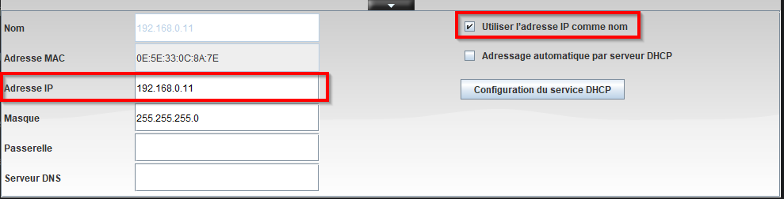
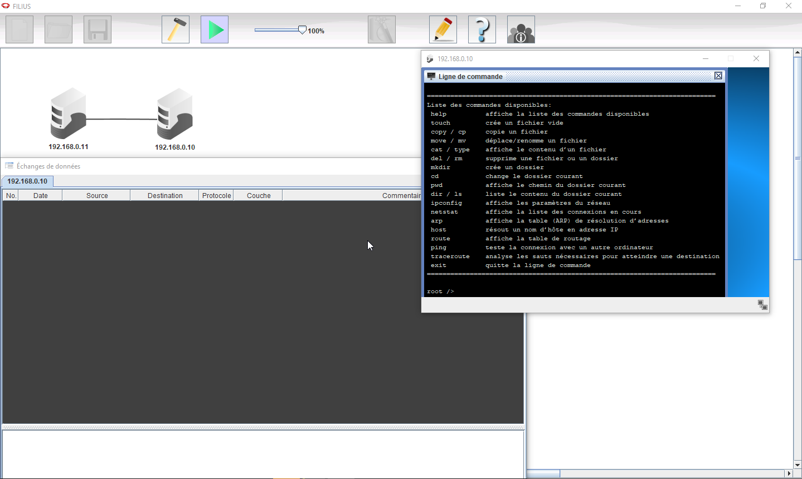
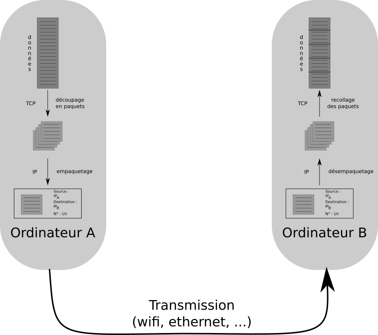

Adresses IP et protocole TCP/IP
Lorsque vous tapez dans votre navigateur une URL, comme par exemple « www.toutatice.fr », et que vous appuyez sur entrée, votre ordinateur ou téléphone se met en communication avec une autre machine, probablement à Rennes, et cette machine vous renvoie la page HTML correspondante.
Cet acte que nous pratiquons quotidiennement soulève de nombreuses questions quand on réfléchit à son fonctionnement :
- Comment les ordinateurs se reconnaissent-ils entre eux ?
- Comment font-ils pour trouver par où faire passer les données ?
- Comment les données circulent-elles et sont elles reconstituées correctement par l'ordinateur qui les reçoit ?
Nous ne pourrons bien entendu pas répondre à toutes ces questions dans le cadre du cours de SNT, mais nous pouvons quand même lever un peu le voile sur le fonctionnement réel de l'internet.
Connecter entre eux deux ordinateurs
Dans toute la suite de ce thème, nous utiliserons le logiciel libre Filius, qui permet de simuler de manière simplifiée les réseaux informatiques.
Commençons donc par connecter deux ordinateurs entre eux, et regardons comment ils communiquent :
-
Ouvrez le logiciel Filius.
Attention : choix de la langue
Attention, la première chose que vous demandera
Filiussera de choisir votre langue d'utilisation, et il n'y a pas moyen de changer cette langue sauf en supprimant le fichier de configuration qui se trouve dans le dossierC:\Users\"nom d’utilisateur sur le réseau" \AppData\Local\.filius(sous win7 et win 10).Il est possible de supprimer uniquement le fichier
konfig.xml:del C:\Users\"nom d’utilisateur sur le réseau"\AppData\Local\.filius\konfig.xml -
Par glisser-déposer avec l'icône , placez deux ordinateurs dans l'espace de travail.
- Ajoutez un câble entre les-deux.
-
Cliquez-droit sur un des ordinateurs, puis choisissez le menu Configurer. Vous ouvrez un menu de configuration de l'ordinateur.
Adresses IP - premier aperçu
Afin de pouvoir s'identifier, tout ordinateur possède une adresse sur un réseau, appelée adresse IP ( pour Internet Protocol).
Une adresse IP est de la forme
195.221.67.112(cette adresse IP correspond au serveurepwebc1.toutatice.fr, correspondant à l'URL www.toutatice.fr .Les adresses IP, en version 4, sont de la forme :
a.b.c.d, avec \(a, b, c\) et \(d\) qui sont des entiers compris entre 0 et 255. Il existe une version 6 des adresses IP, utilisant 6 valeurs, mais nous nous contenterons d'étudier l'IP V4 .Modifiez l'adresse IP d'un des ordinateurs en la remplaçant par
192.168.0.11. Vous pouvez aussi, pour chacun des ordinateurs,cocher l'option à droite « Utiliser l'adresse IP comme nom ».
-
Démarrez la simulation grâce à l'icône
 .
. -
Cliquez-droit sur l'ordinateur portant l'IP
192.168.0.10(en n'oubliant pas de régler de manière à avoir son IP comme nom), et cliquez sur Afficher les échanges de données. Déplacez la fenêtre sur la droite de l'écran afin de pouvoir voir à la fois cette fenêtre et les deux ordinateurs.En cas de besoin, vous pouvez toujours arrêter la simulation en cliquant sur l'icône Filius Arreter, et ainsi pouvoir déplacer les ordinateurs dans le plan de travail.
-
Cliquez droit toujours sur le même ordinateur, et sélectionnez Afficher le bureau.
-
Dans ce bureau, cliquez sur l'installateur de logiciels, et installez Ligne de commande. Une fois l'installation effectuée (c'est immédiat !), ouvrez le logiciel Ligne de commande par un click gauche. Vous devriez avoir une situation telle que celle-ci :

-
Dans l'invite de commande, tapez la ligne suivante :
ping 192.168.0.11Question
Que s'est-il passé ?
A venir !
-
On s'intéresse dans les échanges de données à la première ligne utilisant le protocole
ICMP(Internet Control Message Protocol), qui doit être en toute logique la n°3. Cette ligne, appelée trame, représente un échange de données entre les deux machines. Cliquez sur la ligne pour obtenir les informations Dans cette trame :-
Quelle est l'IP de la source ?
Done
A venir !
-
Quelle est l'IP de la destination ?
Done
A venir !
-
Quel est le commentaire ?
Done
A venir !
-
-
Dans la trame suivante :
-
Quelle est l'IP de la source ?
Done
A venir !
-
Quelle est l'IP de la destination ?
Done
A venir !
-
Quel est le commentaire ?
Done
A venir !
-
{kind=link}
Commande ping
La commande ping est une commande très souvent utilisée pour effectuer des tests réseau, en cas de dysfonctionnement. Elle s'utilise en donnant soit l'adresse IP de l'ordinateur cible, soit en donnant le nom de domaine de l'ordinateur cible, par exemple :
ping www.google.fr
Cette commande est disponible sur tous les systèmes d'exploitation, vous pouvez vous amuser chez vous à tenter quelques pings, depuis la ligne de commande.
Échanger des données
Nos deux ordinateurs sont bien connectés, ils se reconnaissent l'un l'autre, et forment donc un réseau informatique, que nous agrandirons plus tard. Nous allons maintenant simuler, avec ces deux ordinateurs, une requête web classique.
- Ne fermez les fenêtres de bureau et d'échanges de données de l'ordinateur
192.168.0.10. - Cliquez droit sur l'ordinateur
192.168.0.11, et ouvrez le bureau. - Installez le logiciel Serveur Web.
- Cliquez sur le nouvel icône, et démarrez le serveur.
- Sur l'ordinateur
192.168.0.10, installez le navigateur web. - Ouvrez le navigateur, et tapez dans la barre d'adresse l'IP du serveur web, c'est-à-dire
192.168.0.11. Vous obtenez une page web, certes basique, mais réelle. -
Si vous avez regardé la fenêtre montrant les échanges de données, vous avez constaté que beaucoup d'échanges se sont produits. Nous passerons sur les trois premières lignes (il s'agit de la négociation des paramètres de la transmission entre les deux ordinateurs, appelée TCP-handshake, qui est hors-programme de SNT), mais nous nous arrêterons sur les échanges des trames en bleu foncé :
-
Cliquez sur la première des lignes bleu foncée dont la source est
192.168.0.11(en théorie la deuxième ligne bleu foncée):-
Dans la couche
Transport, quel est le numéro de séquenceSEQ?Done
A venir !
-
Dans la couche
Application, que contient le commentaire ?Done
A venir !
-
Quel est le numéro d'acquittement (
ACK) de la ligne bleue-claire suivante ? Par qui cette trame at-elle été émise ?Done
A venir !
-
-
Cliquez sur la ligne bleue foncée suivante.
-
Qui est l'émetteur ?
Done
A venir !
-
Quelle est la demande ?
Done
A venir !
-
-
Que contiennent les lignes bleues foncées suivantes ?
Done
A venir !
-
Protocole TCP/IP
Depuis le début de cette activité, j'utilise le mot protocole. Mais que signifie-t-il ?
Protocole
Cherchez la définition Wikipédia et donnez la définition de « protocole » dans le cas général puis en informatique :
En informatique il existe de nombreux protocoles. Vous en avez quelques exemples avec Filius : ARP, ICMP, TCP, etc.
Nous nous intéresserons uniquement à 2 protocoles : IP et TCP (Transmission Control Protocol), qui sont très utilisés pour les transmissions web. Ils sont tellement liés qu'on parle souvent de protocole TCP/IP.
Détaillons-en un peu le fonctionnement !
Lorsqu'un ordinateur \(A\) veut envoyer des données, par exemple une image, à un ordinateur \(B\), le protocole TCP va, avec un certain nombre d'opérations, découper les données de l'image en petits paquets, les numéroter, puis les transmettre au protocole IP.
Le protocole IP encapsule les données et rajoute, entre autre, l'adresse IP de la source (ordinateur \(A\)) et celle de la destination (ordinateur \(B\)).
Une analogie simple serait de considérer l'idée de transmettre par la poste un très très long texte. TCP écrirait ce texte sur des feuilles simples, et numéroterait ces feuilles. Chacune des feuille serait transmise au protocole IP, qui les mettrait dans une enveloppe, sur laquelle est écrit à la fois l'adresse du destinataire, ainsi que celle de l'expéditeur. IP envoie ensuite chacune des enveloppes à l'ordinateur \(B\).

TCP et IP ne se contentent pas d'envoyer. Ils travaillent aussi à la réception. IP désencapsule les données (il sort les feuilles des enveloppes), puis TCP remets les feuilles dans l'ordre tout en envoyant à l'expéditeur un accusé de réception (ACK) pour lui signaler que le paquet est bien arrivé.
Une fois l'accusé reçu par l'émetteur, le protocole TCP de l'ordinateur \(A\) envoie le paquet suivant. Au bout d'un certain temps, si l'ordinateur \(A\) ne reçoit pas d'accusé, il renvoie le paquet une nouvelle fois. D'où le C de TCP, qui signifie « Contrôle », car le protocole TCP est un protocole qui contrôle l'intégrité des données.
Protocole UDP
TCP/IP n'est pas le seul protocole utilisé pour envoyer des données. Entre autres parce que TCP/IP est lent avec toutes les phases d'accusés de réception.
Un des autres protocoles utilisé est UDP (User Datagram Protocol), qui envoie les données en flux continu sans se préoccuper de leur réception. Ce type de protocole est particulièrement utilisé lorsque la perte de données n'est pas un gros problème, par exemple lors de la transmission de flux vidéos de streaming en temps réel, ou pour de la voix sur IP.
Plus d'ordinateurs
Évidemment, un réseau ne peut pas se contenter d'avoir uniquement deux ordinateurs. Pour connecter plusieurs ordinateurs entre eux, on utilise un Switch.
- Dans
Filius, retirez le câble entre les deux ordinateurs, ajoutez un switch à l'aide de l'icône correspondant et ajoutez deux autres ordinateurs. - Connectez les ordinateurs au switch à l'aide de câbles, puis configurez correctement votre réseau, en donnant à chacun des ordinateurs les IP de types
192.168.0.XoùXest un nombre entier entre \(1\) et \(254\) - Testez ensuite les connexions entre les machines à l'aide soit de la ligne de commandes, soit d'un navigateur web. Vous pouvez utiliser le cadre ci-dessous pour prendre des notes.